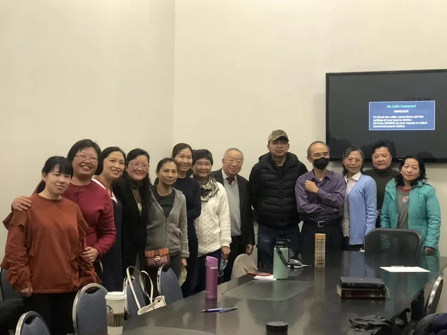

迦南團契
Canaan Fellowship
迦南團契
Canaan Fellowship

迦南是上帝赐给祂子民的美丽土地，这也是我们团契名称的由来。
Canaan is the beautiful land that God gave to His people, which is also the origin of the name of our fellowship.
团契成员大多是来自福建及其他地方的移民家庭。聚会主要以普通话进行，活动内容包括诗歌、查经、生活专题分享（信仰、健康、家庭、人际关系等），以及祷告。
Most members of the fellowship are families who immigrated from Fujian and other places. Meetings are primarily conducted in Mandarin, and activities mainly consist of hymns, Bible study, sharing of life-related topics (faith, health, family, interpersonal relationships, etc.), and prayer.
我们一同敬拜上帝，彼此学习，追求真理，并分享如何教养子女和适应美国生活的经验。欢迎所有人加入我们。
We worship God together, learn from one another, pursue the truth, and share experiences on how to raise children and adapt to life in America. Everyone is welcome to join us.
♥ 聚会时间：每月第二个主日下午 2:00 – 3:30 ♥
♥ Meeting Time: 2:00 PM – 3:30 PM on the second Sunday of each month ♥
Join Us Online
無法親自出席？線上觀看直播或隨時收看錄影。
Can't make it in person? Watch our services live or access recordings anytime.